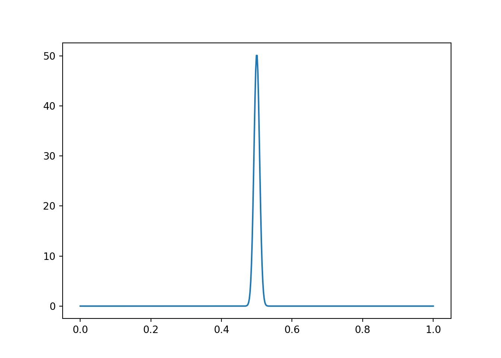

6 Hierarchical generalization
In previous examples, there were always a finite number of hypotheses that we were making inferences about (number of black balls, fair or trick coin, yellow or green taxi). Sometimes, we want to consider an infinite set of hypotheses. For example, after flipping a coin, what is the probability of that coin coming up heads? The answer to this question could be any number in the interval [0,1].
6.1 The Beta-Binomial model 🪙
Figure 6.1: Photo by ZSun Fu on Unsplash.
We can answer this question with a model called the Beta-Binomial model, named for the probability distributions it uses. First, let’s set up the basic assumptions of the model.
Let \(P(\text{heads}) = \theta\). We don’t know what \(\theta\) is. After observing a sequence of coin flips \(D\), we want to estimate \(\theta\). This can be accomplished by directly applying Bayes’s rule:
\[ P(\theta|D) = \frac{P(D|\theta) P(\theta)}{P(D)} \]
The data \(D\) in this case corresponds to the number of \(k\) heads out of \(n\) total flips. This follows a Binomial distribution, which describes the probability of getting \(k\) successes out of \(n\) trials, when the probability of success on each trial is \(\theta\). We will define heads as a “success.”
\[ \begin{align} P(d|\theta) = P(k|\theta,n) &= \text{Bin}(k; n, \theta) \\ &= \binom{n}{k} \theta^{k} (1-\theta)^{n-k} \end{align} \]
The notation for the \(\text{Bin}(\cdot)\) function indicates that this is a distribution over \(k\) (number of successes) and the distribution has the parameters \(n\) (the total number of trials) and \(\theta\) (the probability of a success on each trial).
We can define the prior, \(P(\theta)\), however we like. Because \(\theta\) is a random variable that can take on any value from 0 to 1, we cannot just say \(P(\theta) = 0.5\) like we could in earlier examples. Instead, \(P(\theta)\) must be a probability distribution that assigns probabilities to any value from 0 to 1. If we know nothing about \(\theta\), we could use a Uniform(\([0,1]\)) or non-informative prior that assigns equal probability to all values of \(\theta\).
Alternatively, a convenient choice (for reasons explained below) for \(P(\theta)\) is the Beta distribution:
\[ P(\theta) = \text{Beta}(\theta;\alpha,\beta) \]
The Beta distribution has two parameters: \(\alpha > 0\) and \(\beta > 0\). Let’s create a function that will allow us to visualize the Beta distribution.
from scipy import stats
import numpy as np
import matplotlib.pyplot as plt
def plot_beta(a, b):
x = np.linspace(0,1,num=500)
px = stats.beta.pdf(x, a, b)
fig, ax = plt.subplots()
ax.plot(x, px)
plt.show()plot_beta takes two arguments: a (\(\alpha\)), and b(\(\beta\)) and plots a Beta distribution with those parameter values.
Let’s see what it looks like with a few different values.
plot_beta(1,1)When \(\alpha = \beta = 1\), the Beta distribution is identical to a Uniform(\([0,1]\)) distribution.
plot_beta(3,3)When \(\alpha\) and \(\beta\) are greater than 1 and equal, we get a distribution with a peak around 0.5. If we had strong prior expectations that the coin was unbiased, we could increase the parameters even more:
plot_beta(50,50)What about when \(\alpha\) and \(\beta\) are not equal?
plot_beta(4,2)Now, what if \(\alpha\) and \(\beta\) are less than 1?
plot_beta(0.5,0.5)6.1.1 Conjugate distributions
The Beta distribution is the conjugate distribution for the Binomial distribution. This means that when the likelihood is a Binomial distribution and the prior is a Beta distribution, then the posterior is also a Beta distribution. Specifically, after making these assumptions,
\[ P(\theta|D) = \text{Beta}(\theta; \alpha + k, \beta + n-k) \]
The parameters of the posterior distribution are (1) the sum of \(\alpha\) from the prior and the number of observed heads and (2) the sum of \(\beta\) from the prior and the number of observed tails. This means that the parameters \(\alpha\) and \(\beta\) of the Beta prior have a natural interpretation as “virtual’’ flips.” For example, the larger \(\alpha\) is compared to \(\beta\), the more biased toward heads we expect \(\theta\) to be. Additionally, the larger \(\alpha\) and \(\beta\) are, the more certain (less diffuse) the prior is.
6.1.2 Parameter estimation
Because we used a conjugate distribution, we can use our same plot_beta function to generate posterior probability distributions after some coin flips.
Suppose we start with a fairly strong belief that a coin is fair, represented by this distribution:
plot_beta(30,30)plot_beta(30+20,30)This wasn’t totally realistic, though. If you picked a coin off the ground, your prior beliefs about it being bias would probably look more like this:
plot_beta(2000,2000) What happens if we now flipped this coin 20 times and it came up heads every time?
plot_beta(2000+20,2000)